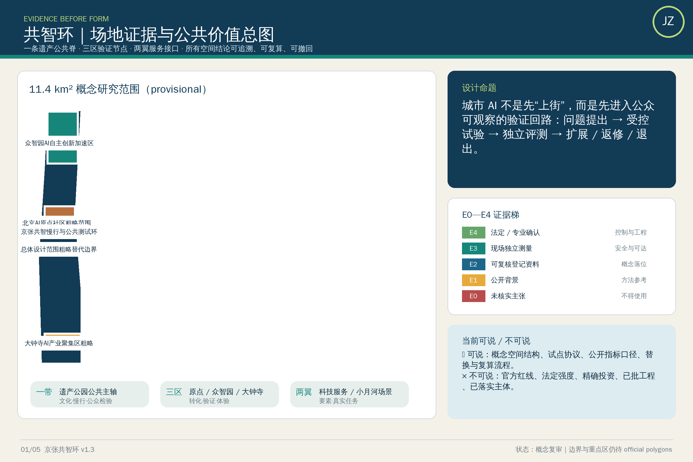
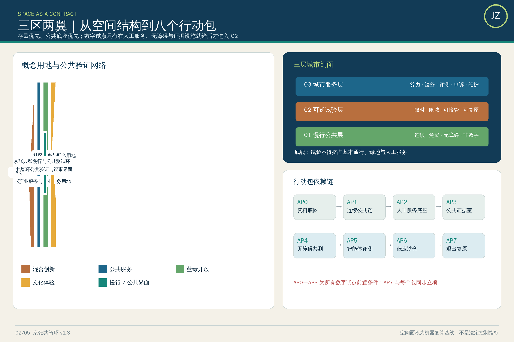
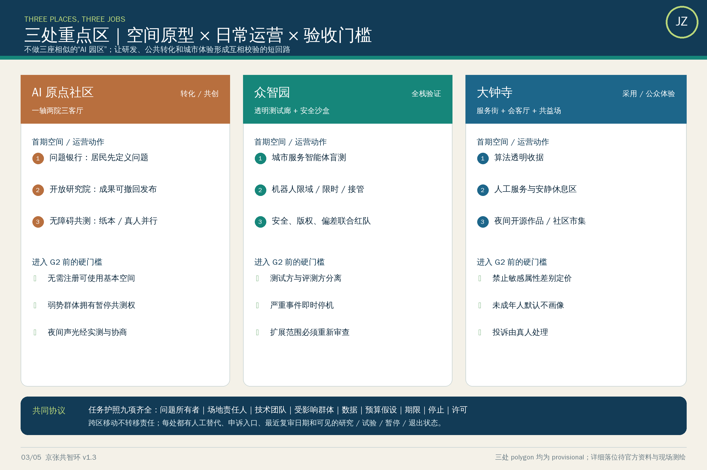
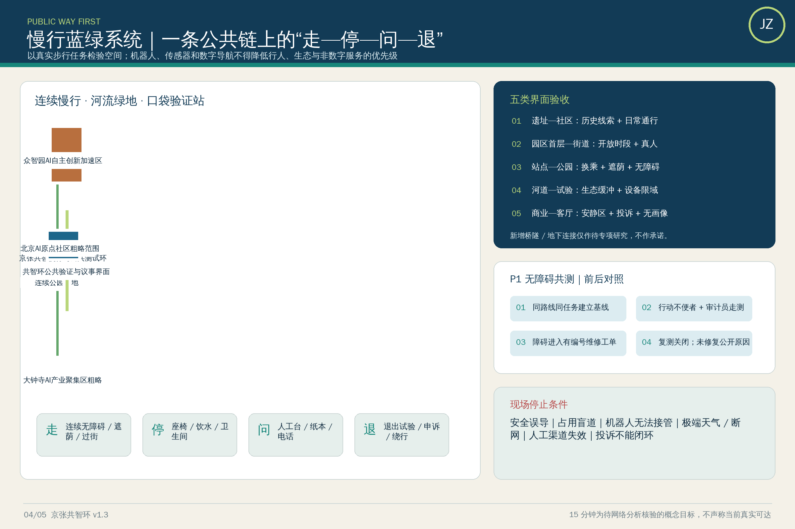
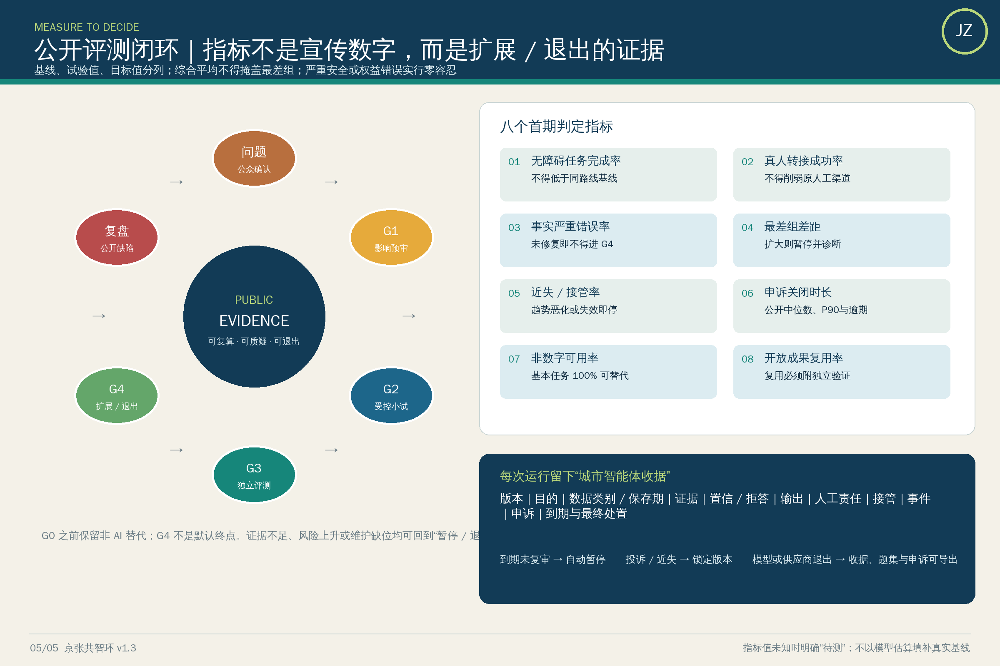

京张共智环：可验证城市智能体开放带
以京张遗址公园为公共价值主轴，建立城市AI上线前评测、上线中监督、上线后复盘的开放创新带。
京张共智环：可验证城市智能体开放带
> **v1.3 实施证据版｜状态口径**：四项包级自检已通过；空间数值与图形仍基于仓库 provisional geometry，聚合数据置信度为 **low**。可用于概念内容复审，不是官方红线、法定控制或精确面积依据。逐资产权利与生成链见 report/copyright_statement.md，整改差异见 changelog.md。
**英文名：Jing-Zhang Civic AI Loop；口号：让每一次城市智能，都经得起公众检验。**
设计依据与资料清单
本成果是开放共创的概念城市设计，不替代法定规划、政府审定或工程设计。依据官方公告、智能体任务书、公开场地包、事实导航包及仓库登记资料 [source:OFFICIAL-ANNOUNCEMENT] [source:AGENT-TASKBOOK] [source:SITE-PACKAGE] [source:PROCESSED-FACT-PACK] [source:SOURCE-REGISTRY]。当前 SITE_BOUNDARY 与三处 KEY_AREA 均来自仓库 provisional geometry [source:BOUNDARY-SOURCE] [source:KEY-AREA-SOURCE]：仅用于生成、讨论、展示和入口自检，不是 official redline，不支撑容积率、高度、拆改留、权属、道路红线或精确面积结论；官方图件发布后需整体复算 [depth:metrics_recalculation]。
方法为“证据—假设—设计—指标—复核”五联单：每项策略绑定来源、空间图层、可复核指标、责任角色与退出条件。所有城市AI遵循最小数据、可选择、可申诉、人工终审、日志留痕和独立评测。[standard:PROJECT-OFFICIAL-ANNOUNCEMENT] [depth:existing_conditions_diagnosis]

三层范围工作框架
“共智环”不是给传统园区贴AI标签，而是一条沿百年京张历史线展开的**公共价值验证回路**：问题由市民与企业提出，原型在三区研发，在两翼获得要素与场景，进入公共测试带小规模验证，最终以公开结果决定扩展、返修或退出。
- **一带**：京张遗址公园“可走、可学、可测试、可复盘”的公共主轴。
- **三区**：众智园负责全栈工具与安全评测；AI原点社区负责科研—创业—社区共创；大钟寺负责智能原生消费、商务与公众体验。
- **两翼**：中关村科技服务翼配置资本、知识产权、人才和国际服务；小月河场景翼承载交通、生态、健康与机器人受控测试。
- **四环节**：发现问题→沙盒验证→公众体验→证据审议，形成可逆的城市更新机制。
空间证据见 [data:geometry/site_boundary.geojson#SITE-001]、[data:geometry/key_areas.geojson#PROV-KEY-001] 与 [data:geometry/roads.geojson#ROAD-001]。总体控制不是新增大拆大建，而是优先激活存量建筑首层、铁路节点、桥下与边角空间；任何桥隧、地下空间、文保和交通方案均需专项论证。[depth:three_level_scope_framework] [depth:overall_spatial_structure]

视觉识别
Logo 方向为“铁路双轨 + 闭合验证环 + 开放节点”，以深轨蓝、验证绿、历史铜三色构成；字符标识独立绘制，不使用企业商标或受限字体。导视分为文化棕、公共服务蓝、试验状态黄/绿三套，不与一带主Logo混用。
统筹研究范围产业与未来城市研究
共智环把产业政策转译为八类可共享要素：算力券、可信数据空间、模型评测、开源法务、首试场景、耐心资本、国际人才服务与公共采购证据。众智园建设“工具链—模型—智能体—机器人”联合验证栈；AI原点社区形成高校实验室、开源社区、创业团队、居民议题的短回路；中关村科技服务翼提供知识产权、标准、融资与国际化服务。所有支持均为机制建议，不代表财政、招商或企业承诺。
6个对标案例及可迁移要点
|案例|学习要点|京张转译|不可照搬| |---|---|---|---| |新加坡 Smart Nation / AI Verify [source:CASE-AI-VERIFY]|公共利益目标、标准化测试|城市AI公共评测协议|国家级身份与数据条件| |巴塞罗那 22@ [source:CASE-22AT]|旧工业区混合更新、创新网络|铁路遗产+存量空间渐进激活|大尺度地产更新| |埃因霍温 Brainport [source:CASE-BRAINPORT]|企业—高校—政府协作|三区两翼任务型联盟|单一龙头依赖| |多伦多 Waterfront 数字治理争议 [source:CASE-QUAYSIDE]|从失败中学习数据治理与公众同意|数据影响评估、退出与申诉|平台企业主导治理| |波士顿 Kendall Square [source:CASE-KENDALL]|高密度科研转化与公共空间|原点社区步行创新网络|高租金排斥效应| |深圳南山科技园 [source:CASE-NANSHAN]|产业链、资本与快速场景迭代|众智园全栈验证+大钟寺市场反馈|速度替代安全评估|
对标仅作方法背景，不支撑法定空间控制。正式空间与任务结论仍以仓库登记资料为准。生态KPI采用“可验证而非许愿”：开放测试任务数、独立评测覆盖率、公众问题关闭率、中小团队使用率、无障碍参与率、事故/申诉闭环时长、开源成果复用数；基线缺失项标为待调查，不编造产值和投资额。
总体设计范围城市更新与控规深度城市设计
总体设计以“铁路文化脊+公共价值环+横向缝合口”为骨架，保留可再用存量、补足连续慢行与公共服务，新增量只在官方控规、权属、文保和市政条件确认后落位。四类概念用地承担创新研发、混合服务、文化公共与蓝绿开放功能 [data:geometry/land_use.geojson#LU-001]；建筑规模仅复算概念基底 [data:geometry/buildings.geojson#BLDG-001] [metric:building_footprint_area_sqm]，不推导法定容量。[standard:MOHURD-CONTROL-DETAILED-PLANNING] [depth:land_use_layout] [depth:development_intensity_controls]
更新对象分为保留利用、适应性改造、条件性拆除与可逆新建：在现状建筑普查缺失时不判定具体拆除；高度、体量、天际线以低层公共界面和铁路视廊保护为方向，待控规核验 [depth:height_massing_character] [depth:retain_renovate_demolish]。市政采用需求侧减量、分布式能源和端侧算力概念，工程容量待专项论证 [depth:municipal_new_infrastructure]。
重点区域详细设计
- **众智园AI自主创新加速区** [data:geometry/key_areas.geojson#PROV-KEY-001]：花园型验证栈，首层共享工具链、模型评测与安全实验；慢行连到清河，机器人测试限速、限时、可接管。
- **北京AI原点社区** [data:geometry/key_areas.geojson#PROV-KEY-002]：近校成果转化街区，以小街区、共享首层、开源穹顶和生活服务形成步行创新网络。
- **大钟寺AI产业聚集区** [data:geometry/key_areas.geojson#PROV-KEY-003]：城市型智能经济街区，四象限缝合商业、数据要素剧场与公共体验，避免封闭园区化。
三处范围均为 provisional polygon，规模、拆改留、道路接口与建筑形态只表达方向；官方边界替换后重做面积、冲突与可达性复算 [metric:key_area_count] [depth:three_key_area_detailed_design]。

AI 创新生态、人才画像与 AI+ 场景
本节按智能体开放任务书展开用户、场景、测试与运营，而非把AI当作装饰标签 [source:AGENT-TASKBOOK] [standard:PROJECT-AGENT-OPEN-CALL-TASKBOOK]。 六类用户：通勤居民、老人/残障人士、学生与科研人员、创业团队与中小企业、游客与亲子家庭、基层运营者。每个场景必须公示目的、数据、模型局限、人工责任人、申诉入口与停用条件。
12张场景卡
|#|场景—空间—运营|最小数据与人工边界|成功指标| |---|---|---|---| |01|无障碍路径助手—全带慢行网—社区共测|匿名路况；用户确认路线|可达路线覆盖、纠错时长| |02|拥挤疏导建议—节点广场—现场调度|聚合客流；人工下令|等待时长、误报率| |03|多语文化导览—铁路遗址—文博审校|无身份识别；史实审校|纠错率、可理解度| |04|社区服务导航—原点社区—街区服务台|用户自愿输入；人工兜底|一次办成率| |05|中小企业合规助手—科技服务翼—专业复核|企业授权文档；专家终审|建议采纳与撤回率| |06|开源算力调度—众智园—资源委员会|任务元数据最小化|中小团队可得性| |07|机器人低速配送—小月河翼—限定时窗|不做人脸识别；远程接管|零伤害、接管率| |08|公共空间微气候建议—公园节点—园林复核|环境传感；不采个人信息|热舒适改善| |09|适老健康服务导航—社区节点—医务转介|不诊断；人工转介|误导率、转介完成率| |10|消费服务翻译—大钟寺—商户共治|端侧翻译；不画像定价|投诉率、响应时长| |11|公共安全复盘助手—运营中心—事后审查|脱敏事件；禁止自动执法|复盘闭环率| |12|市民议题归纳—共智议事厅—随机抽审|去标识文本；公开抽审|观点覆盖、公平误差|
三类产业测试验证场
A“模型上街前”评测场：偏见、幻觉、鲁棒、隐私和无障碍测试；B“机器人慢行共存”场：限定区域、速度、时段、远程接管与事故退出；C“公共服务智能体联测”场：跨部门流程沙盒，只用合成/清权数据，未通过不接生产系统。测试状态用绿/黄/红灯公开，任何黄红状态不得包装为已部署。
用地、建筑规模与拆改留方案
概念用地以混合创新、公共服务、文化展示和蓝绿开放四类互补，不将研发办公单一化；图层面积可复算，但规划比例与容积率待官方边界和控规确定 [data:geometry/land_use.geojson#LU-002] [metric:floor_area_ratio] [standard:MNR-LAND-USE-CLASSIFICATION-GUIDE]。现阶段建筑图层只表达一个参与者控制的适应性改造基底 [data:geometry/buildings.geojson#BLDG-001]：优先“留结构、改首层、补无障碍”，拆除须经过安全、文保、碳排与公众程序，新增采用可拆卸小体量。[standard:MOHURD-ARCH-DESIGN-DEPTH-2016]
交通、轨道、市政与公共服务设施
共智环优先步行、骑行和公共交通接驳，以一条概念慢行脊连接三区，横向缝合既有道路断点 [data:geometry/roads.geojson#ROAD-001] [depth:traffic_rail_slow_parking]。停车以共享、错峰和外围转换为深化方向；新增桥隧不作为承诺。公共服务嵌入15分钟节点，包含无障碍咨询、人才服务、开源法务和人工兜底窗口；新型基础设施实行端侧优先、最小采集、分布式能源与传统市政协同，容量和站点均待专项复核 [depth:municipal_new_infrastructure]。

蓝绿空间、公共空间与城市风貌
概念蓝绿基底由京张遗址公园、清河/小月河联系与口袋花园组成 [data:geometry/green_space.geojson#GREEN-001] [depth:blue_green_public_space]；实际岸线、生态和文保边界待官方资料复核。 公共空间采用“连续慢行脊—横向缝合口—口袋验证站”三级结构：公园主轴连续组织步行、骑行、休憩和文化；横向缝合优先改善现有过街与可达性，新增桥隧仅作为待专项研究概念；验证站以可移动、可拆卸组件嵌入存量空间 [data:geometry/public_space.geojson#PUBLIC-001] [metric:public_space_ratio]。
1. **AI原点·开源穹顶**：可进入的开源成果年轮与实时评测墙，展示数据来源、版本、失败记录和贡献者；不展示商业排名。 2. **京张百年·时序站**：用机械铁路信号语言串联1909、创新年代与AI未来，所有史实由专业机构审校。 3. **共智议事厅**：市民、开发者、运营者共同审议城市AI的圆形空间，设静音室、无障碍席、儿童视角台和人工申诉窗口。
大钟寺探索“智能原生但不无人工”的新业态：可解释商品顾问、跨语种服务、机器人夜间补货沙盒、AI创意工坊和数字无障碍认证。组件库包括：双面信息柱（服务/风险）、端侧交互台、可撤离机器人停靠位、低照度传感杆、雨水花园座椅、贡献者铭牌。组件不得遮挡文保本体、消防、盲道或交通视距。荣誉体系只记录可复核贡献：开源代码、公开数据、无障碍修复、公共问题闭环和长期维护。
5. 三种文化的一条时空叙事（agent.5）
叙事不是“铁路+代码”装饰拼贴，而是三种共同价值：京张铁路的自主工程与公共连接、中关村的开放试验与知识转化、AI时代的可验证协作。游线分三幕：**从自主建造出发—在开放创新中迭代—向人本智能共同负责**。
导视采用轨枕节奏、坐标刻度与验证印章；文化标识讲“时间与地点”，整体Logo讲“共同验证”，两者严格分层。国际传播文案：*From the first railway engineered by China to civic AI tested with the public — Jing-Zhang turns innovation into a shared, accountable urban capability.* 所有历史图片、字体、肖像和标识仅使用自制、公共领域或明确授权材料。
更新项目清单、实施政策与分期计划
项目清单以可逆原型、公共证据设施、慢行缝合和存量首层更新为四类；概念分期图层记录近期试点、门槛和退出条件 [data:geometry/phasing.geojson#PHASE-001] [depth:renewal_project_list] [depth:phasing_implementation]，不代表政府投资、招商或审批安排。 年度节律以真实城市问题而非会展流量为主线：
- 春季“城市问题开源季”：居民与基层运营者发布任务，形成公开问题单；
- 夏季“模型上街前挑战”：围绕安全、公平、无障碍开展红队与复现；
- 秋季“京张城市AI周”：开放演示、国际对话、失败案例展和专业评审；
- 冬季“公共价值复盘会”：公布指标、申诉、事故、停用和下一年预算建议。
开发者社区实行任务认领、导师复核、版本留痕、维护承诺和贡献者永久署名；测试场景经“提出—伦理/安全预审—小规模试验—公众反馈—独立评估—扩展/返修/退出”六关。国际合作只输出开放协议、评测集与可复用组件，不输出未经授权数据。
7. 实施路线与治理
|阶段|低后悔行动|进入下一阶段门槛| |---|---|---| |0—6个月|官方资料补齐、无障碍审计、问题征集、存量空间清单|来源清权、公众代表参与、风险台账完成| |6—18个月|3个可逆原型、公共评测协议、贡献者系统|独立评估通过、重大风险可退出| |18—36个月|三区两翼联动、年度活动、开放组件复用|公共价值指标持续改善| |36个月后|在法定程序和专项论证后择优深化|人类专业团队最终判断|
治理结构由公共价值委员会（含居民与无障碍代表）、技术与安全组、空间与文保组、独立评测组、运营秘书处构成。高影响决策禁止自动化；涉及健康、安全、权益、执法或资源分配的输出必须有人类责任人。数据默认不采集，确需采集则最小化、限定期限、用途隔离、可撤回并接受审计。
8. 从概念到空间：一条可验证的城市剖面
共智环以“慢行公共层—可逆试验层—城市服务层”三层叠合，而不是用单一地标替代城市设计。**慢行公共层**保证连续、免费、无障碍的日常通行；**可逆试验层**只在标识清楚的时间和边界内运行原型；**城市服务层**把算力、法务、评测、申诉和维护嵌入既有建筑。三层共享一条不可让渡原则：测试不得挤占基本通行、绿地和非数字服务。
8.1 五类空间界面控制
|界面|设计动作|AI介入边界|人工验收| |---|---|---|---| |铁路遗址—社区|保留历史线索，以口袋广场和慢行支路缝合|只做导览、设施报修和拥挤建议|文博、街道与居民共同审校| |园区首层—街道|可开启首层、共享会议与原型橱窗，避免封闭园区|预约与翻译可用AI，门禁和权益决定不用自动化|运营方逐项确认开放时段| |轨道站点—公园|连续遮荫、座椅、饮水、无障碍换乘和夜间照明|客流只用聚合值，不做人脸识别|交通、消防和无障碍专项复核| |河道绿地—测试场|生态缓冲优先，机器人仅限硬质铺装和限定时段|环境感知不采集可识别个体|园林、水务、安全员联合放行| |商业街—公共客厅|设置安静区、亲子位、人工服务台与投诉入口|禁止画像定价和诱导消费|消费者、商户与街道月度复盘|
8.2 15分钟公共价值环
从任一重点片区入口出发，概念目标是在一段连续步行链上依次遇到“历史解释点—非数字服务点—原型体验点—意见提交点—退出/申诉点”。每个节点采用同一状态牌：**研究中、受控试验、暂停、已退出**，同时公开责任单位、数据项、保留期限、人工联系人和最近复审日期。该目标待官方道路、坡度、过街和设施数据到位后，使用网络分析逐段核验，不以当前示意线宣称真实15分钟可达。[depth:pedestrian_and_slow_mobility]
8.3 存量优先的拆改留判定树
先做权属与结构安全核验；可安全使用者优先“留”，通过首层开放、共享时段和低技改造实现功能；空间性能不足但文化价值明确者“改”，采用可逆构件；只有经法定程序确认无保留价值且公共收益显著时才讨论“拆”。任何面积、建筑高度、退界、地下连通或跨线工程均不在本概念方案中预先承诺。[depth:existing_building_renewal]
9. 三个重点片区：场所、项目与日常运营
9.1 AI原点社区：从科研故事到可进入的创新街区
空间骨架为“一轴两院三客厅”：铁路文化步行轴串联历史解释；开放研究院承接高校与开源社区，社区共创院承接居民议题；入口、邻里和青年三类公共客厅提供不预约也能使用的座位、饮水、卫生间与人工咨询。首期不新建宏大地标，而选择一个既有首层做“问题银行”，一处口袋空间做无障碍共测，一段连续界面做成果橱窗。夜间活动避开住宅敏感边界，声光控制需以实测和居民协商确定。
运营上，每季度公开征集不超过20个问题，先由居民/使用者确认问题定义，再由团队认领；未被认领的问题仍保留、解释原因。成果不能只展示成功案例，也必须展示失败、撤回与修订记录。**验收门槛**：基本公共空间不需注册；至少一种纸面参与方式；高影响建议有实名责任人；无障碍代表拥有暂停共测权。
9.2 众智园：把全栈能力变成公共测试基础设施
空间组织为“透明测试廊—安全沙盒—复盘剧场—设备后场”。公众只进入低风险透明测试廊和复盘剧场；涉及机器人、网络安全、算力设备的区域物理隔离并由专业人员管理。测试廊用标准化卡片解释输入、输出、已知限制和停止按钮；复盘剧场按月公布缺陷类别、修复状态和未解决争议，而非发布企业营销排名。
三类验证台分别服务：①城市服务智能体的事实性、可解释性与人工转接；②机器人在低速、限域、可远程接管条件下的安全；③中小企业模型的隐私、版权和偏差检查。**验收门槛**：测试计划、事故预案、保险/责任安排和数据影响评估齐备；红队与运营方分离；严重事件立即停机并在约定时限内公开摘要；任何扩大范围都需重新审查。
9.3 大钟寺：智能原生消费不等于算法促销
以“可比较服务街—城市会客厅—夜间共益场”组织体验。可比较服务街允许不同团队提供翻译、导购、文化解释等工具，但价格、广告和赞助关系必须显著标识；城市会客厅提供人工替代、儿童友好、安静休息和消费者教育；夜间共益场优先小型展演、开源作品与社区市集，避免高亮屏幕和持续噪声形成新的排斥。
示范项目“算法透明收据”不记录个人身份，只在用户主动选择时说明推荐依据、赞助关系、可替代选项和投诉路径。**验收门槛**：不实施基于敏感属性的差别定价；未成年人默认不画像；商户可退出、消费者可无损切换人工服务；投诉由真人处理且不以接受个性化为前提。
9.4 两翼如何真正连接三区
中关村科技服务翼不是抽象箭头，而是每周固定的法务、标准、融资与国际人才门诊；小月河场景翼不是无限试验场，而是经空间、安全和生态审查后开放的任务清单。每个跨区项目使用同一“任务护照”：问题所有者、场地责任人、技术团队、受影响群体、数据清单、预算假设、试验期限、停止条件、成果许可九项缺一不可。护照随项目移动，责任不随空间切换而消失。[depth:key_area_detailed_design]
10. 三个首期试点协议：先证伪，再扩展
10.1 P1 无障碍共测路径（AI原点社区）
**假设**：结构化报障与人工确认能缩短障碍修复闭环，而非仅生成更漂亮的路线。**最小范围**：一条经现场审计的既有公共步行链；不采面部、精确身份或连续轨迹。**对照**：保留原有电话/线下报障渠道，比较两种渠道的发现率、首次响应和关闭时长。**资源包**：项目经理、无障碍审计员、街道维修接口人、数据保护责任人和社区共测补贴；金额待采购和场地核验后编制，不虚构投资额。**停止条件**：出现安全误导、人工渠道被弱化、投诉无法闭环或弱势群体任务完成率下降。成果为障碍类型表、修复台账和可复用审计模板，不发布个人轨迹。
10.2 P2 城市服务智能体公开评测（众智园）
**假设**：公开问题集、盲测与人工转接可以降低事实错误和办事误导。**最小范围**：只测试公开政策导航和场所信息，不代替审批、法律、医疗或权益决定。由独立评测组保存盲测集，居民、企业和外语使用者共同贡献边界案例。上线门槛包括事实正确、来源可点击、不确定时拒答、真人转接成功；任一严重误导即暂停。每轮公布模型版本、测试日期、样本结构、分组误差和已知缺口，禁止只公布综合高分。
10.3 P3 低速配送安全沙盒（小月河场景翼）
**假设**：限定路线、时段、速度和远程接管可在不牺牲行人权益下验证末端配送。试验前完成道路权属、消防、无障碍、网络安全、保险与应急论证；设置物理边界、现场安全员和一键停机，盲人、儿童、老人通行优先。近失事件与接管同事故一样进入复盘。任何碰撞伤害、连续定位异常、无法接管或占用无障碍通道均立即停试。未经专项批准，不从示范线扩展到开放道路。
10.4 统一试验闸门
|闸门|必须提交|谁有否决权|公开物| |---|---|---|---| |G0 问题确认|需求证据、受影响群体、非AI替代|问题所有者与公众代表|问题卡| |G1 预审|数据清单、权利影响、空间安全、预算假设|数据保护/无障碍/场地责任人|影响摘要| |G2 小试|版本、范围、人员、应急和停止条件|现场安全员|试验状态牌| |G3 独立评估|基线、对照、分组结果、事件记录|独立评测组|结果卡与缺陷台账| |G4 扩展或退出|公共收益、维护SLA、申诉、日落日期|公共价值委员会|决定及少数意见|
预算采用“类别—数量—单价来源—不确定区间—批准状态”五列账，而不是当前写入未经核实的总额。优先资源顺序为安全与无障碍、现场运营、独立评估、维护和退出准备，最后才是形象展示。每个试点预留停用、数据删除、设施复原和参与者通知的退出资源。[depth:implementation_phasing]
11. 包容性不是名单：六类用户的完整任务链
|用户与典型任务|可能被排斥的环节|空间/服务补偿|共同验收方法| |---|---|---|---| |行动不便者完成一次跨区办事|坡度、断点、拥挤、只能扫码|连续无障碍链、休息点、人工台|轮椅/助行器使用者现场走测| |视听障碍者理解试验状态|小字、只用颜色、无音频替代|高对比大字、触觉/语音、图形冗余|屏幕阅读与噪声环境任务测试| |老人查询社区服务|注册复杂、误信答案、无真人|免登录访客模式、纸本、真人兜底|首次完成率和误导复盘| |儿童及照护者使用公园|设备冲突、诱导交互、隐私风险|儿童优先区、设备隔离、默认不画像|照护者观察与儿童友好访谈| |小微企业验证工具|合规成本高、被平台锁定|共享测试、开源模板、可携带结果|首次测试时长与复用率| |外语访客理解铁路文化|机器误译、历史失真、网络门槛|双语核心信息、离线导览、专家审校|回译和事实抽检|
招募不能只依赖线上渠道。每次试点至少组合社区线下、专业组织、小微企业和开放报名四类入口；提供合理交通、照护和时间补偿，记录拒绝参与的原因但不收集不必要身份。公众代表不是一次咨询对象：在 G0 定义问题、G1 检查风险、G3 解释分组结果、G4 对扩展拥有表决和附条件意见权。
11.1 无障碍 QA 清单
1. 发布前：键盘可达、屏幕阅读顺序、替代文字、字幕/文字稿、200%缩放、非颜色单一编码、触摸目标与简明语言检查； 2. 现场前：坡度、净宽、路面、过街、照明、座椅、卫生间、导盲连续性和紧急疏散走测； 3. 运行中：人工帮助可见、故障不阻断基本服务、临时施工同步更新、反馈有编号； 4. 结束后：按障碍类型统计未完成任务，公开修复与未修复原因。自动工具只做初筛，真实用户任务测试与专业审计共同签字后才算通过。
11.2 公平性评测与申诉
只在合法、必要且获得适当同意的前提下，以去标识方式比较不同使用情境的任务完成率、错误拒绝、错误接受、等待时间和人工转接成功率；样本太小则不发布可能反识别的分组结果。综合平均值不得掩盖最差组。若任一关键组相对基线显著恶化，先暂停影响该组的功能而不是要求用户适应系统。
申诉提供现场、电话/纸面和数字三种入口；确认收到、分派真人、给出理由、允许补充证据、复核并通知结果。申诉材料与产品训练数据默认隔离。高影响决定不得由原模型自动复核自身，复核人须能推翻输出并记录理由。[depth:public_service_and_inclusion]
12. 共智环操作系统：可审计的多智能体协作
共智环的原创性不在“更多AI”，而在把每个城市智能体变成可检查、可替换、可退出的公共组件。六类角色互不代替：**问题代理**整理需求但不决定优先级；**证据代理**检索并标注来源等级；**空间代理**检查图层和现场条件但不作工程结论；**风险代理**提出最坏情境和停止条件；**评测代理**运行锁定测试集；**记录代理**形成版本、决定和贡献者账本。最终批准始终由有责任的人类机构作出。
每个组件发布“城市智能体护照”：名称/版本、用途与禁用用途、输入输出、来源与许可、适用人群、已知失败、分组表现、人工接管、申诉入口、维护者、到期日、依赖和变更记录。不同供应者可实现同一接口，公共部门与场地运营者保留迁移、导出和停用能力，避免单一模型或厂商锁定。
**证据等级**分为 E0 未核实主张、E1 公开背景、E2 可复核登记资料、E3 现场/独立测量、E4 经法定或专业程序确认。设计讨论可使用 E1—E2 并显著披露；空间控制、工程、安全和权益决定必须等待相应 E3—E4。新证据到来时，系统记录哪些图、指标、试点和决定受到影响，触发定向复算，而不是静默覆盖旧版本。
12.1 决策权与数据权
|事项|提出|检查|批准/否决|保存| |---|---|---|---|---| |公众问题优先级|居民、使用者、企业|问题代理去重|公共价值委员会|公开问题账本| |试验数据使用|项目团队|数据保护责任人|场地责任人+受影响代表|期限到期删除证明| |模型版本上线|技术团队|独立评测组|有责运营者|版本与测试摘要| |空间范围扩大|项目团队|交通/消防/文保/无障碍等专项|依法有权机构|批准依据与附加条件| |暂停与退出|任何参与者可报告|安全员核实|安全员可即时暂停，委员会决定后续|事件与复盘摘要|
12.2 失败也形成公共知识
缺陷按“安全/权益、事实、可用性、公平、运营、版权”分类；公开严重度、发现方式、影响版本、临时措施和关闭证据。失败原型不被包装成成功，但去除隐私和商业秘密后形成测试案例。贡献记录采用持续标识，允许个人选择署名、化名或不公开；署名不等于认可最终方案，也不转让原有权利。[depth:ai_innovation_ecosystem]
13. 文化与国际传播：三种时间同时可读
叙事不是把铁路、创新和AI做成三个展板，而是形成“**工程勇气—开放试错—公共责任**”的连续价值线。历史层只陈述经审校事实；中关村层用真实方法和贡献记录解释创新；AI新文化层重点呈现测试、纠错和退出，而不是拟人化崇拜机器。
导视采用三段语法：棕色线框说明“曾发生什么”，蓝色实线说明“今天可使用什么”，绿色虚线说明“正在试验什么”；黄色只表示注意/限制，红色只表示停止。每块试验牌必须有中文核心信息与简明英文、状态、时间、责任人、非数字替代和二维码之外的联系方式。地标控制为可拆卸、低能耗、不遮挡历史本体和基本导向。
国际传播句为：**A century-old railway becomes an open civic proving ground where urban AI must earn trust before it scales.** 对外交流输出协议、失败案例、评测模板和公共空间组件，不把北京经验宣称为普遍答案；所有翻译经母语/领域双重审校，历史名称保留规范译法。[depth:culture_narrative_and_identity]
指标体系、面积复算与合规矩阵

14.1 指标字典与首期判定
|指标|分母/口径|基线怎么取|首期判定而非虚构目标| |---|---|---|---| |无障碍任务完成率|完成预设任务人数/参与测试人数|改造前同路线、同任务走测|不得低于基线；严重安全误导为零容忍| |人工转接成功率|规定时限内接通真人/请求转接|现有人工渠道抽样|新系统不得削弱原渠道| |事实严重错误率|会造成权益/安全损害的错误/有效回答|锁定盲测集|任一严重错误未修复不得进入G4| |最差组差距|表现最好与最差关键情境之差|分层共测，过小样本不披露|差距扩大则暂停并诊断| |近失与接管率|近失/接管事件/有效运行小时|沙盒空载与有人监督测试|趋势恶化或无法接管即停试| |申诉关闭时长|受理至书面结果的中位数与P90|现有渠道台账|公开逾期原因，不以平均数掩盖长尾| |公共空间非数字可用率|无需手机/账号可完成的基本任务/全部基本任务|现场任务清单|核心通行、休息、求助必须100%可替代| |成果复用率|被另一团队验证采用的开放组件/已发布组件|版本仓库记录|复用必须附独立验证，不以下载量代替|
每个指标同时记录 owner、采集频率、数据最小化、分组限制、质量检查、发布日期和纠错入口。基线、试验值和目标值分列；没有基线时只写“待测”，不得以模型估算填补。空间面积指标继续由脚本从同一版 geometry 计算并标注版本；官方多边形替换后，旧值保留为历史版本，不与新值混算。
14.2 公开评测卡
每次 G3 发布一页结果卡：研究问题、范围/日期、版本、样本与缺失、对照方法、主指标、分组结果、事件、参与者反馈、局限、独立评测签字和下一决定。代码、题集或数据不能公开时说明具体法律/安全原因，并至少公开方法和审计接口。任何宣传材料引用结果必须同时显示范围、日期与限制。
空间数值 [metric:site_area_sqm] [metric:green_ratio] [metric:public_space_ratio] 仅是 provisional geometry 下的机器复算结果，不是规划控制指标。方案真正承诺的是评测口径：
- 公共利益：问题关闭率、弱势群体参与率、无障碍任务完成率；
- 可信AI：独立评测覆盖率、严重缺陷拦截率、人工接管率、申诉关闭时长；
- 创新生态：公开任务数、中小团队参与率、成果复用数、跨区协作数；
- 空间体验：连续可达节点比例、热舒适反馈、公共活动时段覆盖；
- 运营韧性：维护责任明确率、到期复审率、停用演练通过率。
基线在一期普查建立；未获真实数据前不填虚假目标值。风险优先级：① provisional 边界与法定条件缺失——获取官方包后全量替换、EPSG:4548复算；②算法歧视与数字排斥——离线/人工替代、分组评测、无障碍共测；③监控扩张——禁止人脸识别默认部署、数据影响评估和日落条款；④机器人安全——物理隔离、限速、远程接管、事故即停；⑤文保与工程冲突——文保、消防、交通、市政专项论证；⑥运营烂尾——每项场景绑定责任人、预算来源假设、维护SLA和退出计划。
15. 任务书响应不是索引：六项任务的空间—运营合同
为避免“章节齐全但无法交付”，将 agent.1—agent.6 转为六份可验收合同。每份合同同时指定空间载体、首期交付物、责任接口、进入门槛与不做事项；三层范围、三大定位、五大功能因此不是口号并列，而是同一实施链的不同尺度。[source:AGENT-TASKBOOK] [standard:PROJECT-AGENT-OPEN-CALL-TASKBOOK]
|任务合同|空间载体与首期交付|责任接口与验收证据|明确不做| |---|---|---|---| |agent.1 产业与未来城市研究|三区两翼“问题—能力—场景”图谱；首期形成公开问题库与服务资源目录|产业研究组维护季度版本；用问题被认领、资源被调用和跨区转介记录验收|不以企业名单、融资愿望或虚构产值替代生态分析| |agent.2 总体城市设计|一条遗产公共脊、五类界面、横向缝合口与蓝绿慢行系统|空间组以官方资料替换清单、现场断点台账和专业复核意见验收|不把 provisional polygon 当红线，不预设桥隧、轨道或地下工程| |agent.3 重点区详细设计|原点社区问题银行、众智园透明测试廊、大钟寺算法透明收据|三区各有场地责任人；按开放时段、人工服务、停用演练和公众任务测试验收|不以效果图、展会人流或设备数量代替日常使用| |agent.4 AI生态与场景|12张场景卡、3个首期试点、Agent Passport 和公开评测卡|技术组提交锁定测试、版本、事件与人工接管记录；独立评测组签字|不自动执法、诊断、审批、权益分配，不以综合分掩盖严重错误| |agent.5 文化与传播|三段导视语法、双语核心信息、失败案例与贡献者档案|文博审校与社区校读；按事实抽检、回译、可达性和权利台账验收|不复制未清权影像，不把铁路、企业Logo和AI符号做装饰拼贴| |agent.6 实施与运营|八个行动包、G0—G4闸门、五本资源账和退出准备金科目|运营秘书处维护依赖、RACI、采购状态、SLA与复盘；委员会作扩展决定|不虚构投资、运营主体、批准状态或把试点自动升级为长期部署|
六份合同的共同“完成定义”为：成果可被另一个团队复算，现场使用者能找到人工替代，责任人能执行暂停，退出后空间和数据可恢复。任一条件缺失，只能标记为“研究中”，不得写成已建成或已运营。
16. 八个行动包：把总体概念压到可采购、可暂停的工作面
行动包按依赖关系组织，而不是按形象工程分期。AP0—AP3 是所有数字试点的前置公共工程；AP4—AP6 才允许受控测试；AP7 从第一天开始而不是项目结束后补做。
|包|0—6个月最小成果|关键依赖|验收与停止| |---|---|---|---| |AP0 资料与现场底图|官方边界/重点区替换清单，权属、文保、消防、市政、洪涝和无障碍缺口台账|主管资料与持证专业团队|坐标、版本、来源、许可四项齐全；冲突未解则不落位| |AP1 连续公共链|选一条既有步行链做坡度、净宽、路面、过街、照明、座椅与卫生间走测|AP0、街道与设施维护接口|行动不便者完成真实任务；出现安全断点不得开放数字导航| |AP2 人工服务底座|三区各落实可见人工台、纸本信息、电话和工单编号|场地运营、人员排班、培训|数字系统故障时基本服务不中断；人工渠道被削弱即暂停上线| |AP3 公共证据室|问题账本、模型/场景版本库、投诉与事件台账、月度公开页|数据保护、档案与信息公开规则|每条决定可追到证据与责任人；超期或无法导出即停止扩张| |AP4 原点无障碍共测|P1一条路线、前后对照、修复工单与共测补偿|AP0—AP3、维修接口|严重误导零容忍；修复不闭环则只保留人工报障| |AP5 众智园公开评测|P2锁定问题集、盲测、红队、真人转接和结果卡|AP2—AP3、独立评测与安全环境|未修复严重事实错误、来源缺失或无法转接即不上线| |AP6 小月河低速沙盒|P3物理边界、限时限速、现场安全员、远程接管与演练|道路/消防/保险/网安/无障碍专项|碰撞伤害、占盲道、定位或接管失效立即停试| |AP7 退出与复原|数据删除证明、设施拆除/复原、参与者通知、开源归档和合同终止清单|每个包同步预留资源|到期未复审自动暂停；无法恢复基本空间则不得进入G2|
16.1 五本资源账与成本纪律
1. **空间账**：场地、开放时段、消防承载、无障碍条件、恢复责任；2. **人员账**：有责运营者、现场安全员、专业审校、独立评测和人工客服；3. **数据账**：字段、目的、法律基础、保存期、访问者、删除证据；4. **设备账**：传感器/机器人/端侧设备版本、维护、能耗、备件与退役；5. **公共信任账**：投诉、近失、分组差距、未解决争议、少数意见和停用记录。
可研前成本只按“调查与设计、空间微更新、设备与安全、人员运营、独立评测、维护、退出复原”七类列项；每项必须写数量依据、市场询价/定额来源、区间、不确定性和批准状态。没有官方范围、工程量与采购询价时不填写总投资。资源排序是安全与无障碍＞人工服务＞维护退出＞独立评测＞设备＞传播展示，防止先买设备、后补责任。
17. 城市智能体收据：一次运行如何被人追责
每次会影响路线、服务选择或现场设备的运行，都生成最小“共智收据”。收据不是记录个人的监控日志，而是记录公共系统自己做了什么：receipt_id、场景/模型版本、请求目的、使用的数据类别与保存期、证据引用、置信与拒答、输出、人工责任人、是否接管、风险事件、申诉编号、到期日和最终处置。身份字段默认不存在；确需联系时将联系方式与运行记录分库存放。
|事件|系统动作|人工动作|公开证据| |---|---|---|---| |证据过期或冲突|降级为“不确定”，停止自动建议|证据代理标注影响范围，专业人员决定更正|版本差异与更正日期| |用户要求真人|冻结自动流程并保留最少上下文|客服从头确认目的，可推翻模型输出|转接是否成功与等待时长| |高风险关键词/场景|拒答或转入限定流程|有资质人员判断，不让模型作最终决定|拒答类别，不公开敏感内容| |投诉或近失|锁定相关版本，暂停同类扩展|安全员分级、通知、调查并决定复用条件|事件摘要、临时措施与关闭证据| |到期复审未完成|自动变为“暂停”状态|委员会选择延长、修改或退出|决定、理由与少数意见|
协议坚持四个架构边界：**端侧优先**，能在设备完成的不上传；**生产隔离**，沙盒不直连真实审批与执法系统；**最小权限**，每个代理只能读完成任务所需字段；**可替换接口**，模型、供应商与硬件均可换，收据和申诉记录可导出。网络中断、模型不可用或供应商退出时，AP2人工底座接管，基本服务继续。[depth:ai_innovation_ecosystem]
18. 可实施性压力测试：在最坏情形下仍保留公共价值
|压力情形|预警信号|降级动作|仍应保留的公共价值| |---|---|---|---| |官方边界与当前示意冲突|面积、道路、权属或重点区变化|冻结图上工程量，替换geometry并触发全部指标/图纸复算|问题库、治理协议、人工服务与评测方法| |预算只够一个首期包|采购范围被压缩、维护资金不清|先做AP0—AP3和P1，不采购高维护机器人|连续无障碍链、人工渠道和公开证据| |模型供应商退出|版本停止维护、接口或价格突变|导出收据/题集，切到替代模型或纯人工|用户权益、投诉和历史决定不丢失| |公众信任下降|退出、投诉、最差组差距或近失上升|停止招募与宣传，独立复盘并开放少数意见|拒绝权、申诉权和非数字服务| |极端天气/断网|积水、高温、通信中断、设备漂移|关闭设备与试验区，启动现场标识和人工巡查|安全通行、饮水、遮蔽与求助| |运营主体未落实|排班、SLA、维护和保险空缺|不进入G2，保留可逆空间微更新|公园与首层公共空间不因数字项目关闭|
首期成功不是“上线三个AI”，而是完成三项可证伪判断：P1是否比原渠道更快关闭无障碍障碍、P2是否在不削弱真人服务下拦截严重误导、P3是否能在行人优先条件下可靠停机。若答案是否定，退出本身就是合格结果；公开失败原因比扩大一个未经证明的示范更有公共价值。
风险、版权与合规说明
现状约束图层目前为空，明确表示权属、文保、市政、消防、洪涝与道路红线尚未获得，不得误读为“无约束” [data:geometry/constraints.geojson#CONSTRAINTS-PENDING] [depth:risk_missing_data] [source:SOURCE-REGISTRY]。
- 五张核心图：总体证据与概念、三区两翼结构、三重点区角色、慢行蓝绿与测试环、指标治理闭环。
- 机器可读：geometry、metrics、assumptions、sources、compliance/standard/depth matrices。
- 人类可读：本报告、离线 visual、A3文册与A0展板。
- 版权：文本、图表与图形由本次智能体协作生成；第三方事实只作引用，不嵌入未授权图片、字体、商标或人物素材。逐资产生成链、输入、许可与审查动作见
report/copyright_statement.md。 - 风险：八维风险评分、缓解措施与人工复核责任见
risk.json；其中政策不确定性与实施复杂度为 5/5，任何扩展均须通过阶段闸门。
本方案响应三大定位、五大功能、三区两翼和 agent.1—agent.6。它的核心不是预测一座“全自动城市”，而是建立一套让城市AI在真实公共空间中**先证明价值、再有限上线、持续接受公众监督、随时可以退出**的制度与空间基础设施。人类与专业团队保留最终判断。
参考资料
brief/public-brief.md（百年京张 AI 创新带公开任务书草案；public-draft，正式发布前仍需复核）。brief/README.md（公开任务书资料边界说明；用于约束可公开、不可公开与待复核资料）。
本地证据登记还包括：[source:OFFICIAL-ANNOUNCEMENT] 官方资格预审公告、[source:AGENT-TASKBOOK] 智能体任务书摘录、[source:SOURCE-REGISTRY] 仓库公开资料登记表，以及 [standard:MOHURD-URBAN-DESIGN-MEASURES]、[standard:MOHURD-CONTROL-DETAILED-PLANNING]、[standard:MNR-LAND-USE-CLASSIFICATION-GUIDE] 三项本地标准快照。它们均按 sources.json 与 standard_matrix.json 的公开性、用途和待复核边界使用，不把 public-draft 或本地快照表述为正式审批依据。